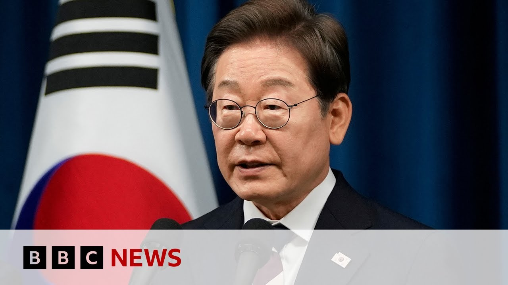

【韩国新任总统李在明承诺“团结”国家 | BBC新闻】
Summary: Lee Jae-myung was sworn in as South Korea's president after winning the election, pledging to revive the economy, reunite the country, and restore democracy during his inauguration in Seoul.
摘要： 李在明在选举中获胜后宣誓就任韩国总统，并在首尔的就职典礼上承诺重振经济、团结国家并恢复民主。

⏱️ Estimated Reading Time: 8 min
📚 高考3500生词 📚 雅思生词 📚 托福生词 📚 GRE生词 📚 UP主自用生词
Now, we're going to turn to South Korea because Lee Jay Mang has been sworn in as South Korea's president, having won a clear victory in Tuesday's election.
现在，我们将目光转向韩国，因为李在明在周二的选举中取得明显胜利后，已宣誓就任韩国总统。
During a scaleown ceremony in Seoul, he promised to revive the economy, reunite the country, and restore democracy.
在首尔的就职典礼上，他承诺重振经济、团结国家并恢复民主。
So, let's cross over to Seoul because my colleague Steve Lie joins us live.
现在，让我们连线首尔，因为我的同事史蒂夫·李正在现场为我们报道。
Steve, good to see you.
史蒂夫，很高兴见到你。
Over to you.
交给你了。
Yeah, thanks very much, Keshash.
好的，非常感谢，凯莎。
Yeah, the reason for that scaleown ceremony that you were talking about was because this is what came about because of a snap election, an unplanned election uh that happened because of the removal of the former president Yun Seango from office over his attempts to declare martial law back in December.
是的，你提到的就职典礼是因为这是一场突然选举的结果，这场未计划的选举是由于前总统尹锡悦去年12月试图宣布戒严而被免职引发的。
So, usually there'd be a 60-day transition period, but there's no such uh no such fortune for the president EJ Mun.
通常会有60天的过渡期，但李在明总统没有这样的幸运。
He's started office today.
他今天已经开始履职。
He was sworn in in fact less than 6 hours after the election commission certified that he was the winner of this election with 49% and the majority uh not the majority but the biggest vote in this election.
事实上，他在选举委员会确认他以49%的得票率赢得选举后不到6小时就宣誓就职，虽然不是绝对多数，但他是本次选举中得票最多的候选人。
We're going to talk a bit more about what's going to be happening next.
我们将进一步讨论接下来会发生什么。
And for that I can bring in my guest Yun Jung Lim, professor at Kongju National University.
为此，我可以请到我的嘉宾、公州国立大学教授林允正。
Yun Jung, it's been a busy time here in South Korea with the elections and the speed at which that it's all happened.
允正，韩国这段时间非常忙碌，选举以及一切发生的速度都很快。
Uh not wasting any time.
没有浪费任何时间。
The president has already named some of his cabinet members.
总统已经任命了一些内阁成员。
Yes.
是的。
Um he because you know as just you explained again there is no transition period for the sitting uh president.
嗯，正如你刚才解释的那样，现任总统没有过渡期。
So he just immediately uh appointed several key position for example um chief of the staff uh or the prime minister or the head of the uh Korean intelligence service too.
所以他立即任命了几个关键职位，比如幕僚长、总理或韩国情报部门的负责人。
Um you know we see pretty uh usual familiar name for example uh former minister of unification uh Mr. Li Jong was named for the head of the UK um intricate intelligence service and it's important for him to get the his cabinet in place and up and running because he has a whole lot of things to start moving on.
我们看到了一些熟悉的名字，比如前统一部长李钟被任命为情报部门负责人，对他来说，让内阁就位并运转起来非常重要，因为他有很多事情要开始推进。
What do you see as his top priorities?
你认为他的首要任务是什么？
Well absolutely uh if you think about all this you know dynamic very volatile uh international situation definitely the relationship with the Washington uh I think this going to be uh prioritized more than any other thing even though um our relationship with the US of course the alliance is robust as if I borrow the white houses's description again the ironclad um nobody will be wondering about that but however still we have a many uh important hot issues such as again the tariff issue um especially on the steel kind of you know key products of the South Korean economy.
当然，如果你考虑到当前非常动荡的国际局势，与华盛顿的关系肯定比其他任何事情都更重要，尽管我们与美国的关系当然很牢固，借用白宫的说法是“坚如磐石”，没有人会怀疑这一点，但我们仍然有许多重要的热点问题，比如关税问题，尤其是钢铁等韩国经济的关键产品。
So you know he immediately need to negotiate with this stuff again the press and President Trump.
所以他需要立即与媒体和特朗普总统就这些问题进行谈判。
So I think uh everybody is watching um how again the Mr. Lee again the president Lee can be handling with um all this difficult situation.
所以我认为每个人都在关注李总统如何应对所有这些困难局面。
The economic and the tariff is certainly one they're he's going to have to be working on but staying with the United States it's not just that there's the security aspects as well.
经济和关税问题当然是他必须处理的问题之一，但与美国的关系不仅仅是这些，还有安全方面的问题。
President Trump has talked about wanting South Korea to to put in a bit more money in in Brunswa approach to to the relationship.
特朗普总统曾谈到希望韩国在布鲁塞尔方式中为两国关系投入更多资金。
It's complicating you know um our relationship can be absolutely complimentary for example again the President Trump his administration is um emphasizing the importance of for example ship building again the maintenance all the things again that we are very good and US is definitely needs that so we have many complimentarity between the alliance not only about the military issues but also other those economic issues too however um we do see kind of potential sure um conflicting interest between the two administration for example energy issue uh climate change issue um this again the president le's government will be more probably progressive um in terms of that kind of again the um policies uh to handle with the climate change whereas as we all know uh President Trump his administration is more conservative you know he they already made a kind of U-turn to the fossil fuel so we'll see again the fossil fuel uh expansion of LNG um exports from US's point of view, imports from our point of view can be a kind of you know one of the major topics to discuss on there's lots of areas for collaboration for and an agreement but lots of things have to be worked out and now that South Korea has a president in place that was sworn in this morning they're going to be able to move on those things.
这使我们的关系变得复杂，但也可以完全互补，比如特朗普政府强调造船和维护等方面的重要性，这些是我们非常擅长的，而美国确实需要这些，所以我们之间有很多互补性，不仅涉及军事问题，还包括其他经济问题。然而，我们也看到两国政府之间可能存在冲突的利益，比如能源问题和气候变化问题。李总统的政府在这方面可能会更进步，而众所周知，特朗普政府更保守，他们已经转向化石燃料。所以从美国的角度来看，液化天然气的出口扩张，从我们的角度来看，进口可能是一个主要讨论话题。有很多合作和达成协议的领域，但很多事情需要解决。现在韩国有了今天早上宣誓就职的总统，他们将能够推进这些事情。
Thanks very much Ejong Lind professor at Kongu National University.
非常感谢，公州国立大学的林允正教授。
Yeah, so Kesha, it's been a busy day here in South Korea and and many more busy days ahead certainly for President Lee as he looks to get his cabinet in place and take action on a long to-do list that has been growing since the six months of turmoil here in South Korea.
是的，凯莎，今天是韩国非常忙碌的一天，未来肯定还会有更多忙碌的日子，因为李总统正在努力让内阁就位，并着手处理自韩国六个月动荡以来不断增长的待办事项清单。